头发
Paper朱 p03 VRoid 头发
这一集约 32 分钟，没有章节。窗口是 VRoid Studio 1.5.0，工程名 Xiduochuan.vroid，顶栏和头发面板是英文。渐变贴图在 PaintTool SAI Ver.2 里画，SAI 是中文界面。参考图浮在视口上。下面的数字都是该帧滑杆或色块上读到的。
先用预设把大形定下来
前发从 Presets 里挑一版
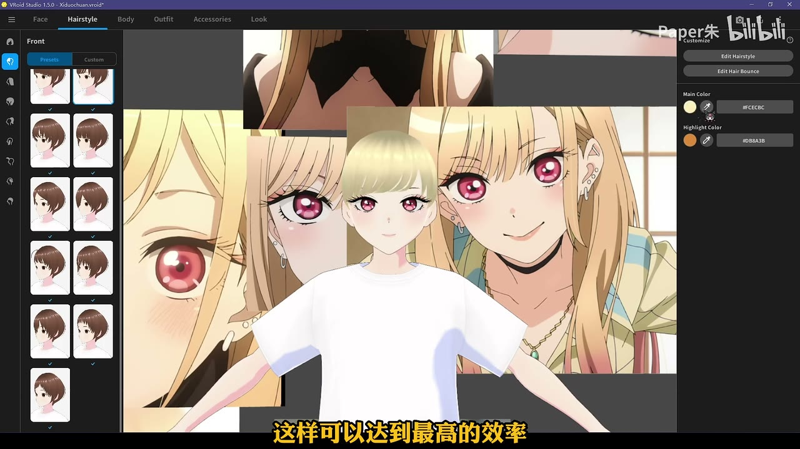
点顶栏 Hairstyle，左侧停在 Front，Presets 亮着，旁边还有一格 Custom。缩略图是一排短发。模型先套上浅金色短发，和后面的长发参考并排。这一帧 Main Color 是 #FCECBC，Highlight Color 是 #DB8A3B。口播说头发尽量在预设模板上改，这样最快。Edit Hair Bounce 这一下没有点开。
进编辑器先看分组
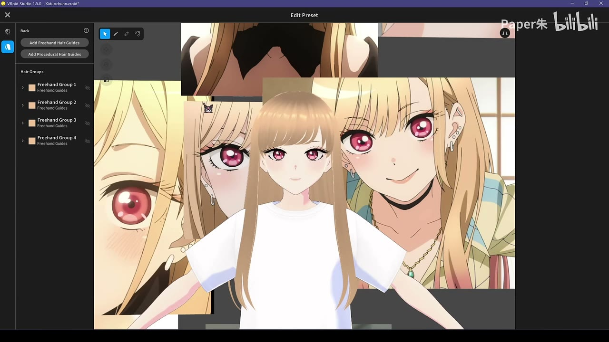
点 Edit Hairstyle 进入 Edit Preset。这一帧在 Back，头发已经换成齐腰的长直发，刘海贴着参考。左侧四个组都还叫 Freehand Group，每组下面写着 Freehand Guides，具体发片没有展开。最左的选择图标亮着。口播说这里能看到每个头发的分组。Add Procedural Hair Guides 一直留在按钮上，后面用到的都是自由发片。
渐变贴图在 SAI 里吸色
整块贴图拉一条竖渐变
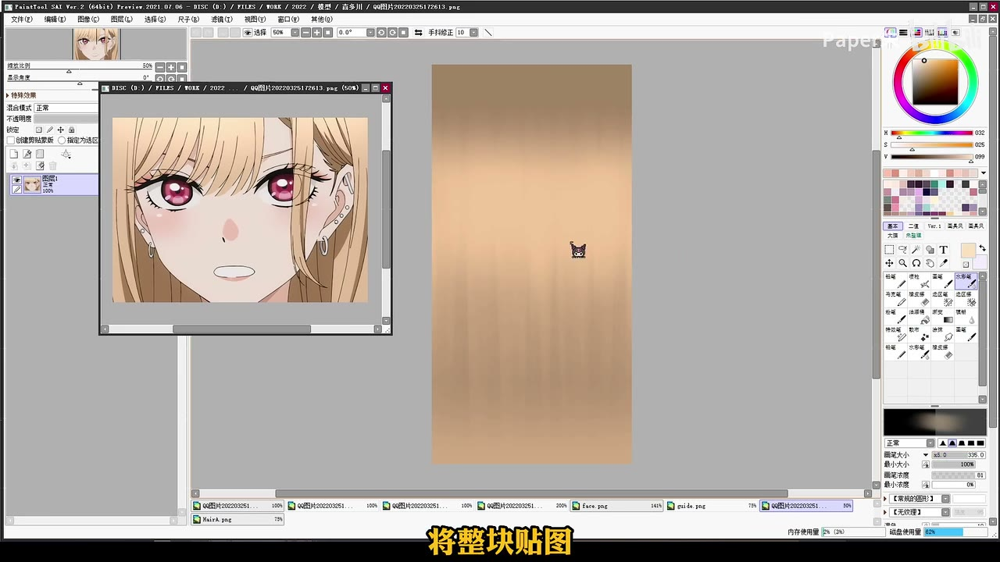
贴图不在 VRoid 里从零涂。拖进 SAI 后，左边小窗是参考脸，中间画布是一条竖向的浅棕渐变，上浅、往下略深。当前图层 HairA.png 不透明度 75%，Face.png 141%，guide.png 75%。圆笔大小 35.0，不透明度 100%，圆笔浓度 81，最小浓度 0；色相 032、饱和 050、明度 099。口播说要多点几处头发来吸色，越靠发尾可以越深，几块贴图的色差不要拉得太大。
拖回 HairA，刘海带上渐变
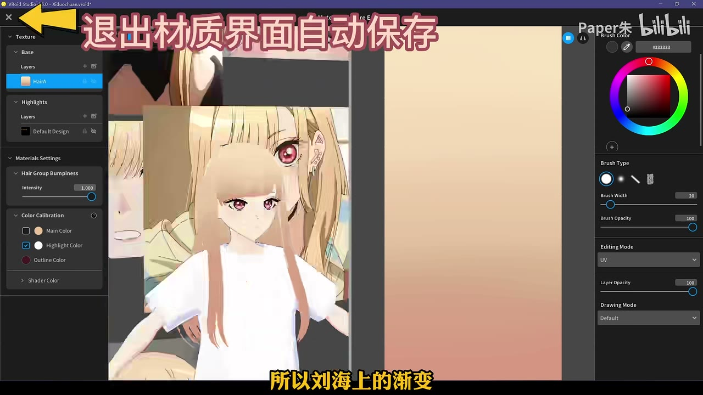
回到材质界面，Base 下选中 HairA，刘海上已经是上浅下粉棕的竖渐变，画布上是同一条渐变。Highlights 还停在 Default Design。Hair Group Bumpiness 的 Intensity 是 1.000。Color Calibration 里 Main Color 没勾，Highlight Color 勾着。笔色 #333333，Brush Width 20，Brush Opacity 100，Editing Mode 是 UV，Layer Opacity 100，Drawing Mode 是 Default。大字写明退出这个界面会自动保存。口播接着说刘海要新建材质再导出，方便以后按组改。
藏起后发，在模板上改刘海发网
选中一根，先读宽度和厚度
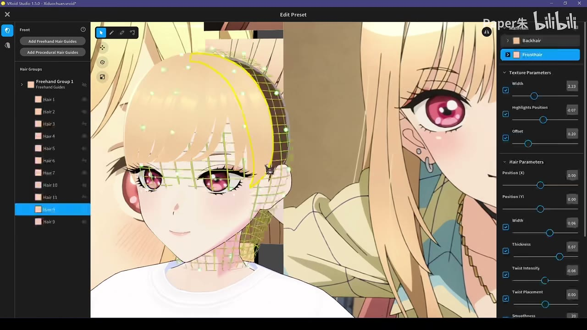
口播说先把后发藏掉，在模板上改刘海。这一帧停在 Front，Freehand Group 1 里 Hair 8 亮着，刘海和侧发铺着绿色发网，黄线沿着参考的刘海走。材质 Backhair、Fronthair，当前是 Fronthair。Texture Parameters 三项都勾着：Width 2.23，Highlights Position 0.07，Offset 0.20。Hair Parameters 里 Position (X) 和 (Y) 都是 0.00；Width 0.98、Thickness 0.07 勾着；Twist Intensity -0.06、Twist Placement 0.00 也勾着。选择工具亮着。口播把工具说成选择、重塑、锚点、笔刷四件，这一帧能确认亮着的是最左边的选择。
笔刷加一缕细发片
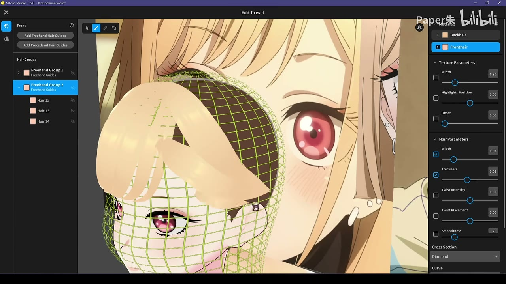
换到笔刷，在 Freehand Group 2 上加发片。侧刘海多出一块斜着的发网，盖住部分参考。这一缕的贴图参数没勾：Width 1.80，Highlights Position 0.00，Offset 0.00。头发参数里勾着的是 Width 0.02、Thickness 0.05，发片比刚才那块大网窄很多。Twist Intensity、Twist Placement 都是 0.00 且没勾，Smoothness 是 20。截面停在 Diamond。口播说笔刷右侧是笔刷属性，宽度在这里收。
锚点形状可以水平翻过来
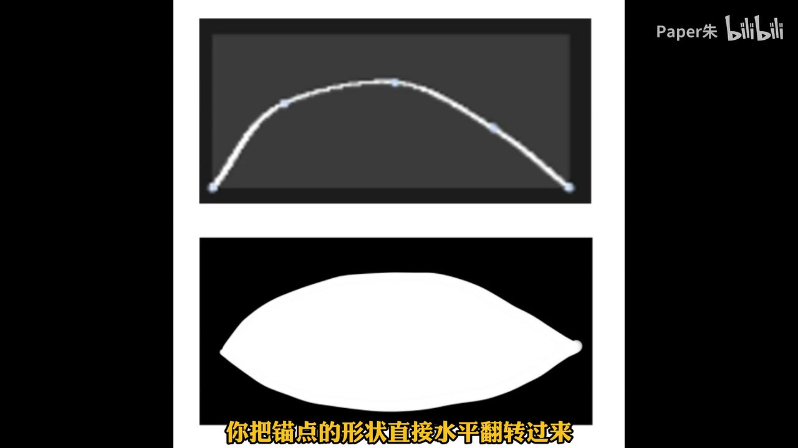
这一下离开软件，用一张图讲锚点。上面是一条拱起的曲线，曲线上有几个控制点；下面是一片白色发片，右端收成尖。字幕说把锚点的形状直接水平翻转过来。口播补充：不熟锚点就多翻着看，发片边界是跟着这些点走的。
一组对应一张发网
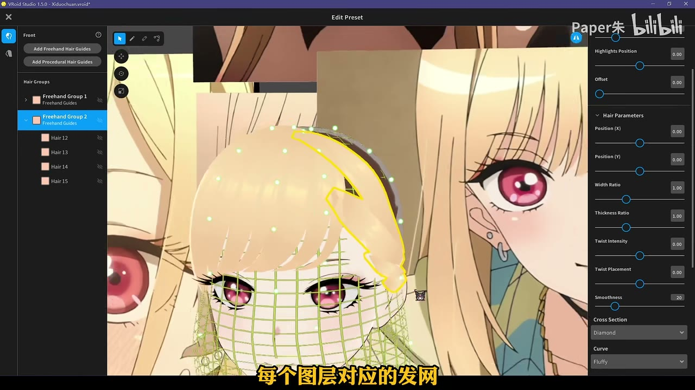
点中整组时，右侧从单根的 Width、Thickness 换成 Width Ratio 1.00、Thickness Ratio 1.00。Twist Intensity、Twist Placement 都是 0.00，Smoothness 20，Cross Section 仍是 Diamond，Curve 是 Fluffy。Highlights Position 和 Offset 都是 0.00。侧发外圈有一圈黄线，里面是绿色发网。口播说新建一层发网再改，动这一层不会带动别的层；点空白处可以先看整体形状。
底发颜色和外观描边
底发主色单独选一档
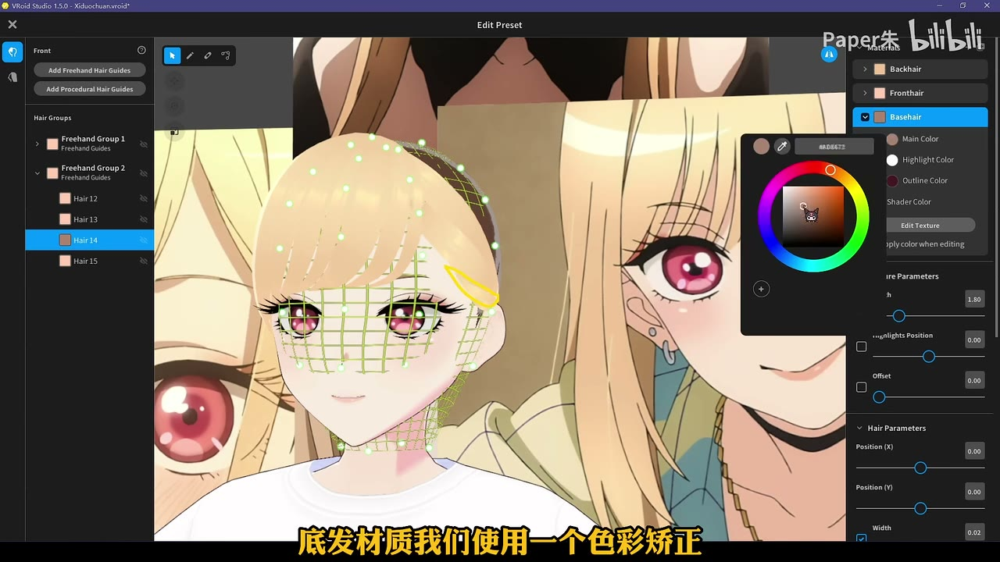
Hair 14 还在 Freehand Group 2。右侧材质改选 Basehair，主色色盘打开，Main Color 被选中，读数 #BD6E73，比前发的浅金更深一档。旁边还有 Highlight Color、Outline Color、Shader Color 和 Edit Texture。被挡住的贴图 Width 露出 1.80，底部 Hair Parameters 的 Width 是 0.02。字幕说底发用色彩矫正做深一点，当作阴影色；口播接着说先把该用底发的发片都指定成这个材质，大型定了再精修。
到 Look 里把头发外轮廓拉出来
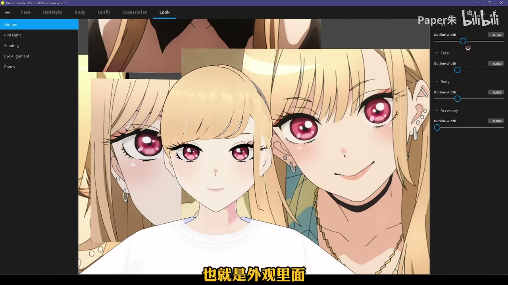
口播说正面不好分头发边界时，到外观里把外边缘拉出来一点。点的是顶栏 Look，不是头发编辑器里的锚点。Outline 下四条读数：Hair 0.102，Face 0.080，Body 0.080，Accessory 0.000。头发比脸和身体多出来一圈。左侧还有 Rim Light、Shading、Eye Alignment、Bones，这一帧没进。视口里刘海已经收成贴着参考的短金刘海。同栏的 Rim Light 没有打开。
分组改名，左右分开做
对着参考收宽度和贴图偏移
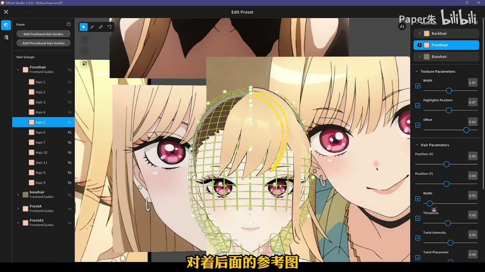
组名从 Freehand Group 改成 Fronthair、basehair、FrontA、FrontA2。Fronthair 展开着，Hair 5 被选中，绿网和黄线都压在参考刘海上。贴图三项勾着：Width 2.87，Highlights Position 0.07，Offset 0.83，偏移比早先那帧靠下很多。头发参数 Position (X)、(Y) 都是 0.00，Width 0.01，Thickness 0.05，Twist Intensity 和 Twist Placement 都是 0.00，并且都勾着。选择工具亮着。口播说这一段就是在模板上改宽度、厚度和路径；单根形状不理想就再动锚点。口播还说单根或整层的 X、Y 都可以在右侧挪，形状差太远的发片直接删。
耳上碎发放进底发
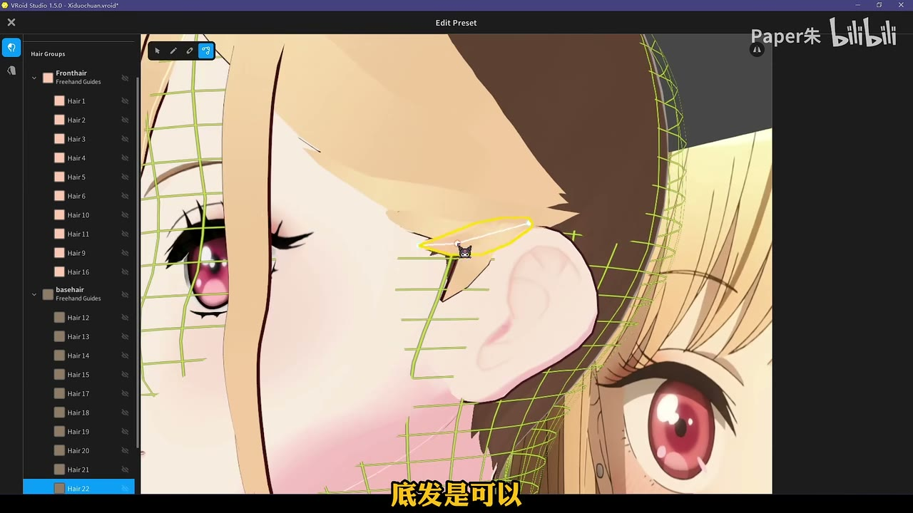
转到侧面看耳朵。basehair 的 Hair 22 被选中，耳廓上方有一小缕黄边发片，周围是绿色发网。工具栏右侧水平对称那一格亮着。口播说左右发型不一样，所以两边分开做；耳后和耳朵上面的底发用宽一点的发片慢慢拉，再补几缕碎发。点开水平对称是为了做得快，不对称的地方仍然单边修。口播还说调整锚点前要先回到鼠标选择，避免选错层，点左边图层比在视口里点更稳。
后发拉长，头顶收发旋
后发中线拉到腰
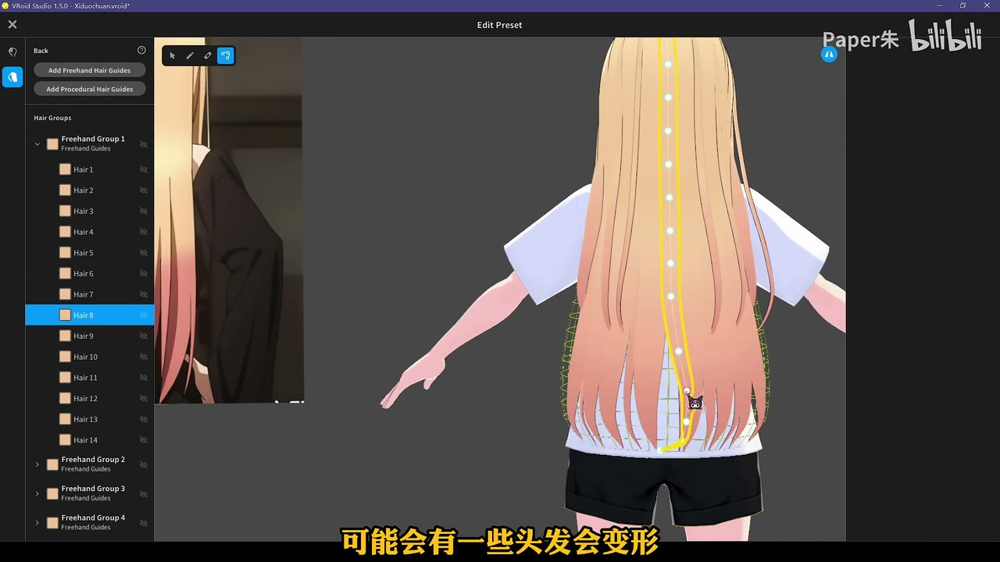
切到 Back。Hair 8 选中，后发中线从上到下是一串白色控制点，发尾已经带着贴图的粉色渐变，下摆附近还有一块绿色发网。左侧小窗是同一头粉尾长发。字幕提醒拉的过程中有些头发会变形。口播说参考图到腰，用选择工具往下拖；变形了就用控制点修回去。口播后来说大型差不多时删掉曲线上多余的点，发尾会分叉，这一帧还没删到那个程度。
头顶对一条中心发旋
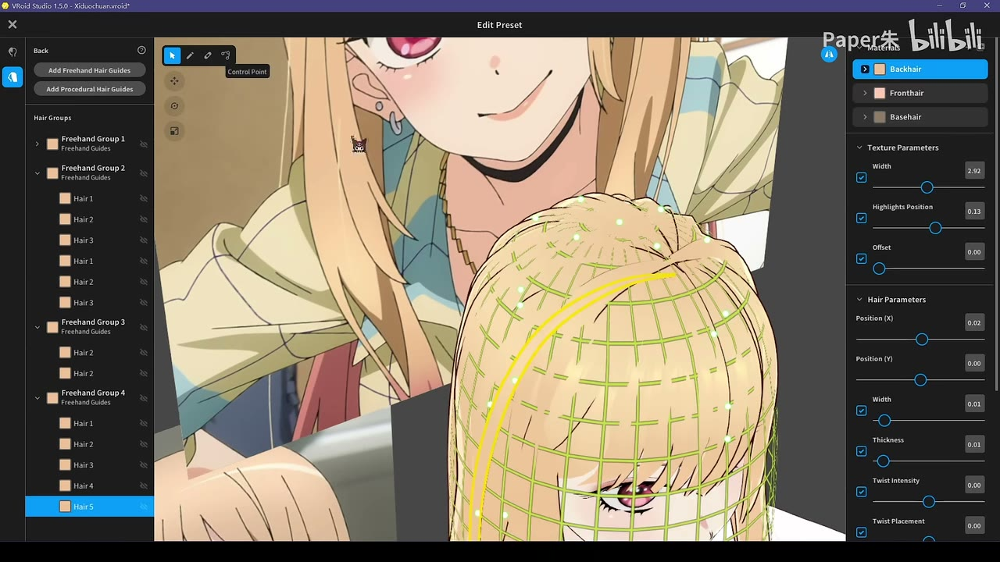
镜头抬到头顶。Freehand Group 4 的 Hair 5 亮着，发网上有一条顺着中缝的黄线，控制点沿着发旋排开，提示写着 Control Point。材质是 Backhair。贴图参数都勾着：Width 2.92，Highlights Position 0.13，Offset 0.00。头发参数 Position (X) 0.02，Position (Y) 0.00，Width 0.01，Thickness 0.01，Twist Intensity 和 Twist Placement 都是 0.00。口播说先定一个中心发旋，发片收在该收的地方，避免穿进头、也避免冒出多余发线。漏层就在底发里补，厚度可以再往低收；复制图层穿出来时，改锚点而不是再叠一层。
侧面和参考对一次大型
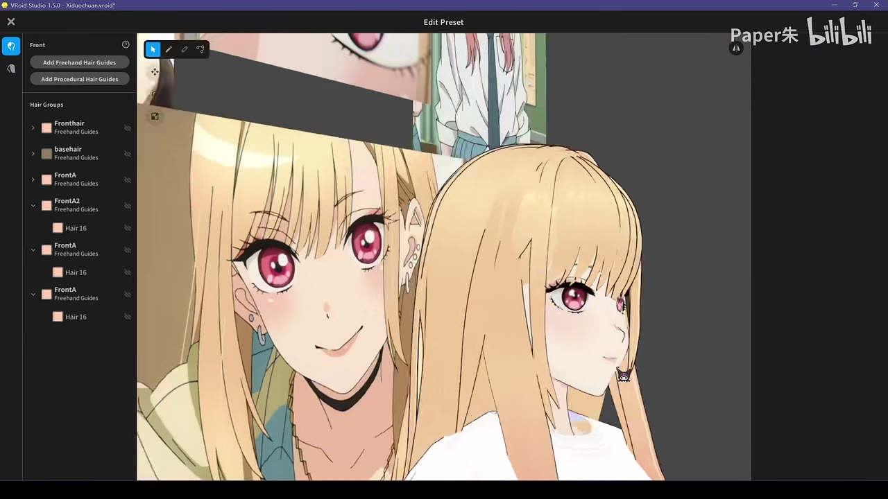
发网收起来，侧面看完成度。长直发、齐刘海和参考并排，发尾仍是浅金。左侧同一套组名还在，FrontA 出现了好几份，展开的都挂着 Hair 16，是复制出来的层。口播说碎发放在最上层，和底发、刘海分开；这一段没有解说的地方，就是在这些复制层上多点碎发、再微调贴图位置。大型到这里先停。
高光是黑白蒙版，跟着发片卷
高光层上涂会透出来的那一块
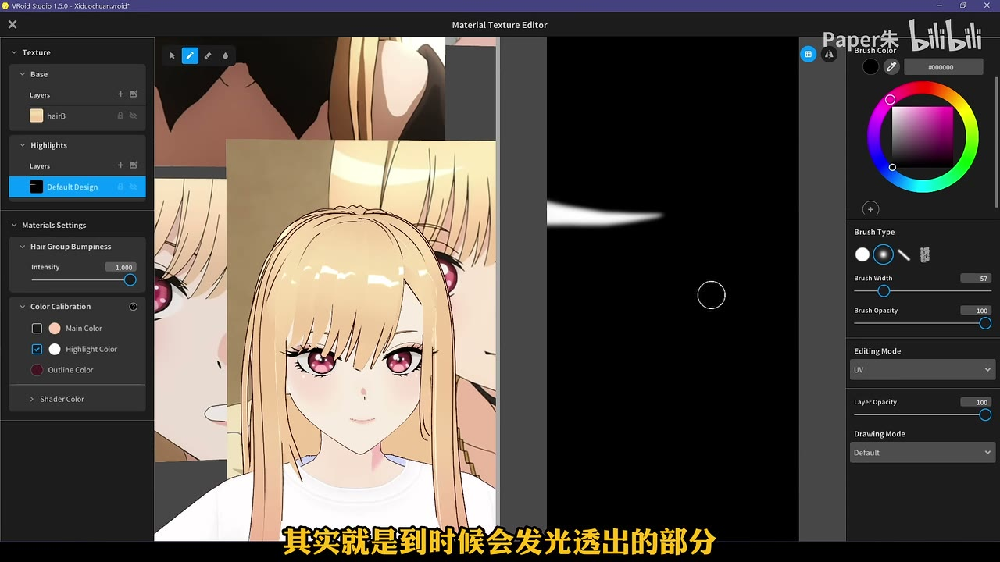
再开材质编辑器。Base 层是 hairB，当前选中 Highlights 的 Default Design。画布是黑的，上方有一笔白。Hair Group Bumpiness 的 Intensity 仍是 1.000。Color Calibration 里 Main Color 没勾，Highlight Color 勾着。笔刷读数是 #000000，第二格软笔亮着，Brush Width 57，Brush Opacity 100，Editing Mode 是 UV，Layer Opacity 100，Drawing Mode 是 Default。字幕说白的地方就是之后会透出来的部分。口播说黑是底板，没有另外一层发光；白涂得太冲就多试几次，贴图进到发片上会被压窄。
高光贴着一根刘海走
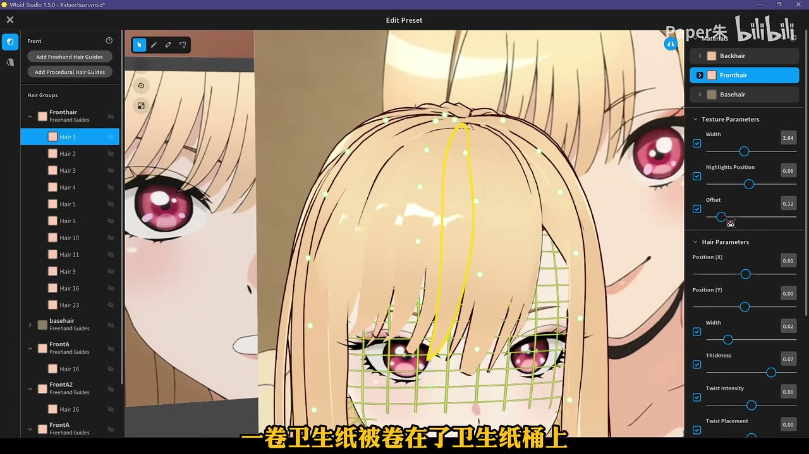
回到发片。Fronthair 的 Hair 1 选中，一条亮高光顺着这根刘海从发顶卷下来。贴图参数：Width 2.64，Highlights Position 0.06，Offset 0.12，都勾着。头发参数 Position (X) 0.01，Position (Y) 0.00，Width 0.02，Thickness 0.07，Twist Intensity 和 Twist Placement 都是 0.00。字幕用卫生纸卷在纸桶上比喻高光贴着发片转。口播说每根头发的高光要单独对；高光变形得厉害时把厚度调低。底发上也会印出一点。宽度要来回看不同角度，画面上这一帧的贴图宽度停在 2.64。
退出时存进 Custom
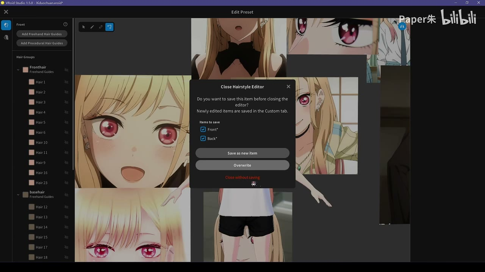
点编辑器的关闭。对话框问要不要在关掉之前保存，并写明新改的项目会进 Custom。Front* 和 Back* 都勾着。三个按钮是 Save as new item、Overwrite，以及红色的 Close without saving。左侧 Front 仍展开着 Fronthair 和 basehair，Fronthair 列表收到 Hair 23。口播说头发本体到这里结束，下一集做衣服。